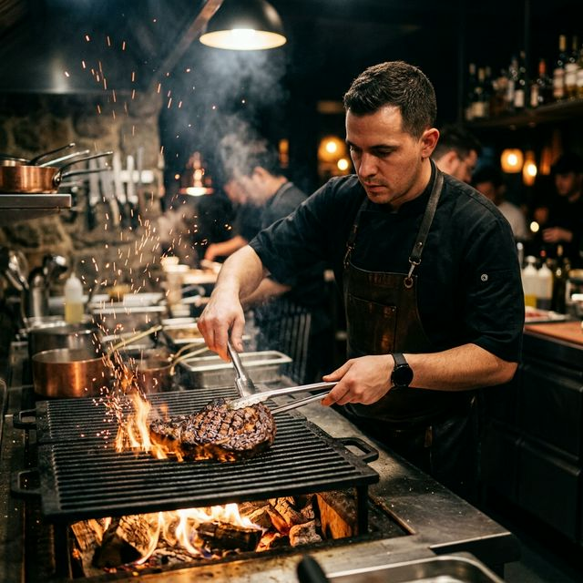

Chez Mamadou, nous célébrons la puissance et la délicatesse d'une viande d'exception. Chaque pièce est sélectionnée rigoureusement, maturée sur place dans nos caves de vieillissement, puis délicatement grillée pour révéler toute son intensité.
